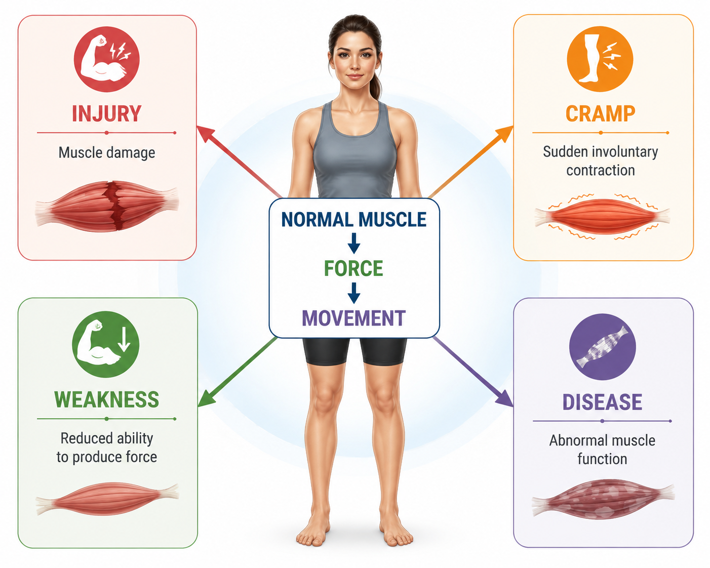
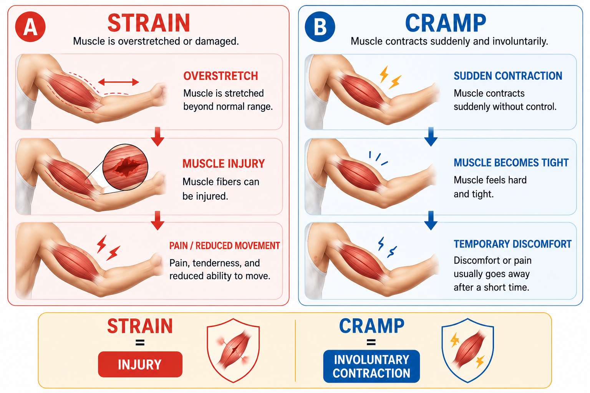
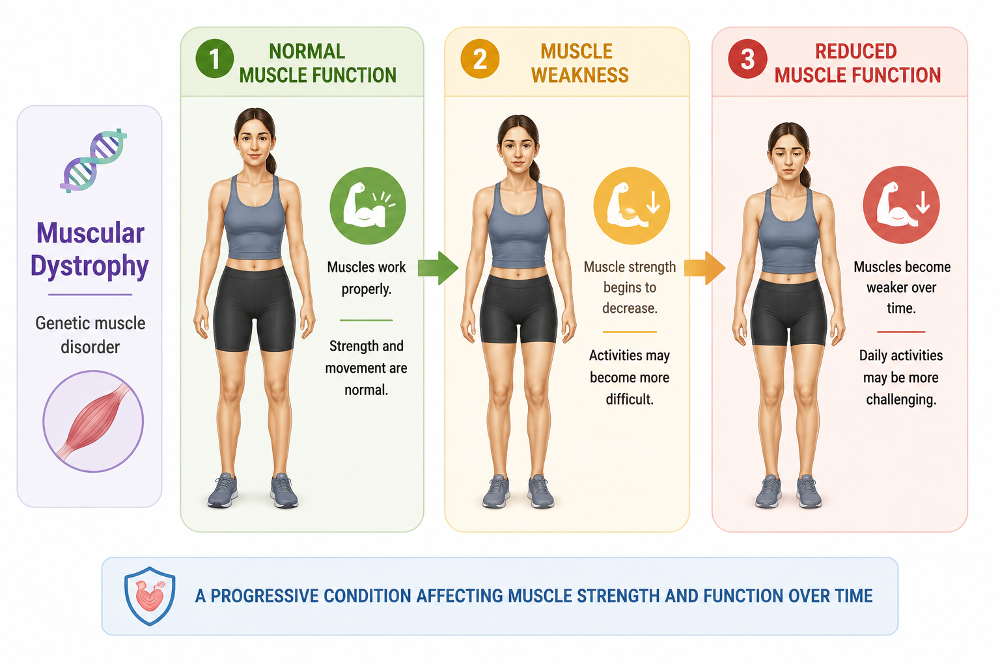
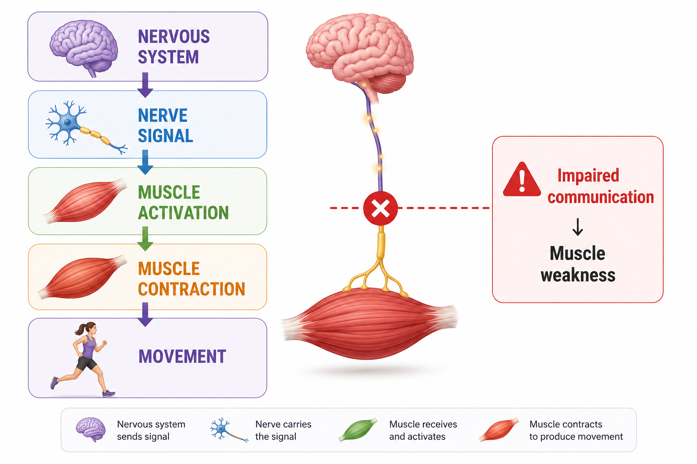
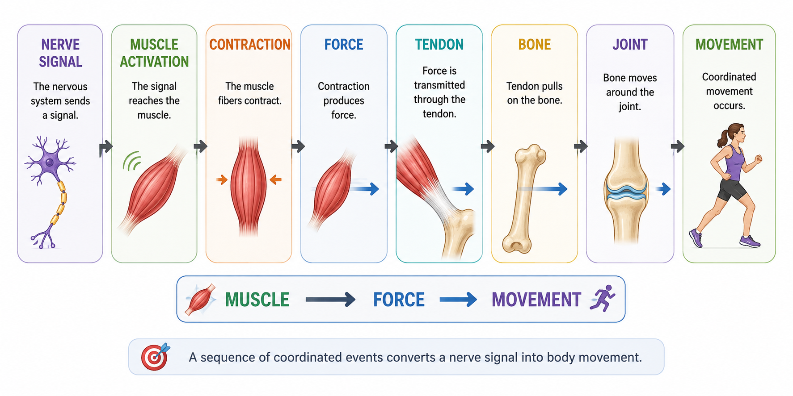
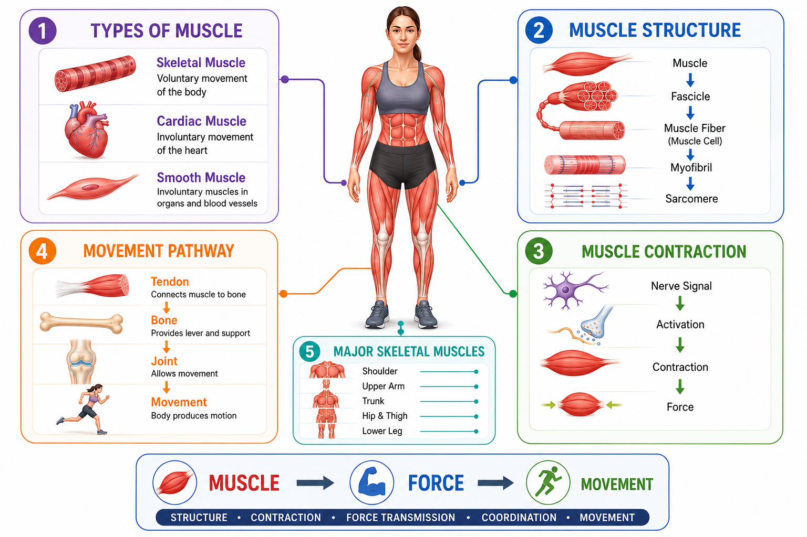

🩺 When Muscles Do Not Work Normally
Muscles normally contract and relax in a coordinated way to produce movement and maintain posture.
Problems can occur when a muscle is injured, overworked, loses normal strength, or is affected by a disease.

Muscle disorders can affect how muscles produce force, maintain strength, or control movement.
💥 Muscle Strain & Cramps
Muscle Strain
A muscle strain occurs when a muscle or its associated connective tissue is overstretched or damaged.
It may occur during:
- sudden movement
- excessive force
- overuse
Common features can include pain, tenderness, and reduced movement.
Muscle Cramps
A muscle cramp is a sudden, involuntary contraction of a muscle.
Cramps can occur during physical activity or sometimes at rest.

Strain = injury • Cramp = involuntary contraction
🧬 Muscular Dystrophy
Muscular dystrophy refers to a group of genetic disorders that cause progressive muscle weakness and loss of muscle function.
Different forms affect people in different ways.
The important idea is that the problem involves the muscle itself, leading to gradually reduced muscle strength and function.

Muscular dystrophy is a genetic disorder associated with progressive muscle weakness, rather than an isolated muscle injury.
🧠 Neuromuscular Disorders
Not all problems affecting muscle movement begin inside the muscle.
Muscle function depends on communication between the nervous system and muscles.
For example, myasthenia gravis is a neuromuscular disorder in which communication between nerves and muscles is impaired, leading to muscle weakness.

Normal movement depends on both muscle function and nervous-system control.
🔗 From Muscle to Movement
A muscle does not produce body movement simply by being present. Movement depends on a sequence of coordinated events.
The nervous system activates the muscle, the muscle contracts and produces force, and that force is transmitted through tendons to bones. Bones then move around joints.
The type and direction of movement depend on which muscles are active and how they act around a joint.

Muscle contraction produces force, and coordinated force transmission produces movement.
📚 Key Concepts From Lessons 4.1–4.4
The previous lessons explored the muscular system from different levels. Each lesson answered a different question.
What types of muscle tissue exist?
Skeletal • Cardiac • SmoothHow is skeletal muscle organized?
Muscle → Fascicle → Fiber → Myofibril → SarcomereHow does muscle produce movement?
Nerve signal → Activation → Contraction → Force → MovementWhere are the major muscles and what do they do?
Muscle name → Location → Primary actionWhat can go wrong, and what should we remember?
Disorders → Review → Complete understandingEach lesson adds another part to the complete picture of how the muscular system works.
🗺️ Final Muscular System Map
The muscular system can be understood by connecting its major tissue types, structural organization, contraction, force production, movement, and major skeletal muscles.

Healthy muscle function connects structure, contraction, force, and movement.
🔁 Quick Review
Think of the muscular system as a connected chain: structure → contraction → force → movement.
🎯 Final Takeaway
The muscular system allows the body to produce force, maintain posture, and generate movement.
Understanding muscles becomes easier when three ideas are connected:
How is the muscle organized?
How does the muscle contract and produce force?
Where is the muscle and what movement does it help produce?
Muscle disorders show that normal movement depends on healthy muscle tissue, proper nerve-muscle communication, and coordinated force transmission.
📝 Test Yourself
Ready to check what you remember?
Practice Quiz →